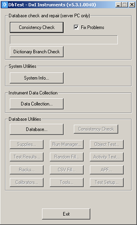
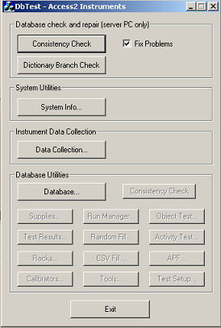
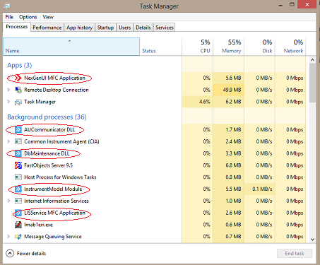

Database - Performing Database Consistency Check on Windows 10
- If you have not already done so, exit the console user interface and make a local copy of the database.
- From the Main Menu, press [Alt] + [F4] and type Access2Support to exit the user interface.
- Shut down the Fast Objects Server.
- Press Ctrl + Alt + Delete and select Task Manager or right-click on the task bar and select Task Manager.
- In the Task Manager window select Processes, select FastObjects Server, and select End Task.
- Press the Windows key and select File Explorer or type file explorer.
- Go to C:\NexGen\Console (for DxI) or C:\NexStep\PC (for Access 2).
- Right-click the
DRW folder and select
Copy.
- If errors occur after you select Copy, use Task Manager to close applications that might be preventing the consistency check from running. See Closing applications with Task Manager fore more information.
- Right-click the Console folder (for DxI) or the PC folder (for Access2) and select Paste to make a copy of the DRW folder.
- Close File Explorer.
- Open the DbTest application and run Consistency Check.
- Press the Windows key, type DbTest, and open the program when it is displayed.
- Select
Fix Problems and select
Consistency Check.
Note: Wait approximately 10 minutes or less for the system to complete the consistency check.


- A message that the consistency check passed or failed will be displayed. Select
OK.
-
If the check failed, run the consistency check a second time.
-
If the check failed after performing a second consistency check, contact Technical Support. Review the DxI Event Log for specific failure information.
-
-
Select Exit to close the DbTest program.
-
Launch the user interface to verify no database errors were recorded.
-
On the Desktop, double-click NexGen Application or Access2 Application or press the Windows key and select NexGenUI UD or NexStepUI UD or type nexgenui or nexstepui.
-
Verify there are no database errors in the event log.
Note: If new database errors are posted, refer to software troubleshooting database error messages.
-
-
If the consistency check completed successfully, delete the local copy of the database.
-
Press the Windows key and select File Explorer or type file explorer.
-
Go to the C:\NexGen\Console (for DxI) or C:\NexStep\PC (for Access 2).
-
Right-click the Copy of DRW folder and select Delete.
-
Close File Explorer.
-
Closing applications with Task Manager
If necessary, use Task Manager to close applications that might be preventing the consistency check from running.
-
Press [Alt] + [F4] and type the password Access2Support to exit the user interface.
-
Press Ctrl + Alt + Delete and select Task Manager or press the Windows key and type Task Manager.
-
In the Task Manager window select the Processes tab.
-
Determine whether any of the following processes are running in the Task Manager.
-
NexGenUI MFC Application or NexStepUI MFC Application
-
AUCommunicator DLL
-
DbMaintenance DLL
-
InstrumentModel Module
-
LISService MFC Application
-
PostOffice DLL
-
Reduce MFC Application
-
Screen TransitionTool MFC Application

-
- For each process that is running, select the process and then select End Task.
- Close the Task Manager window.